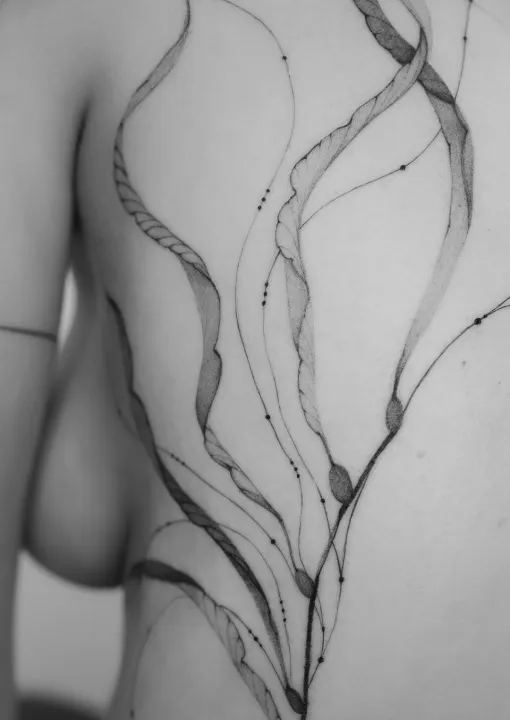
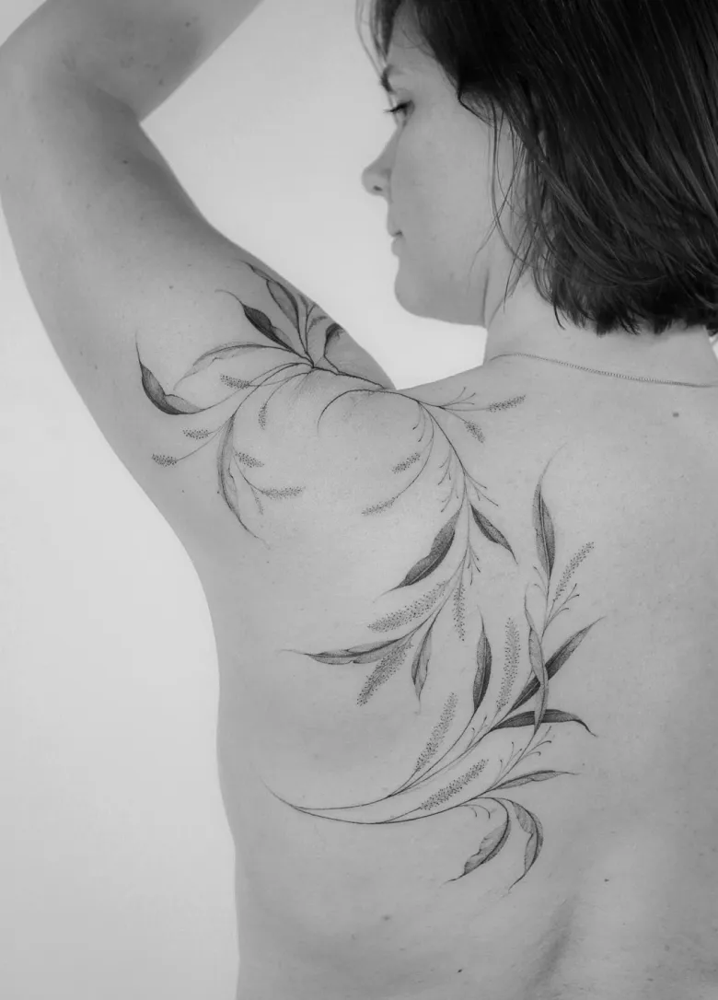
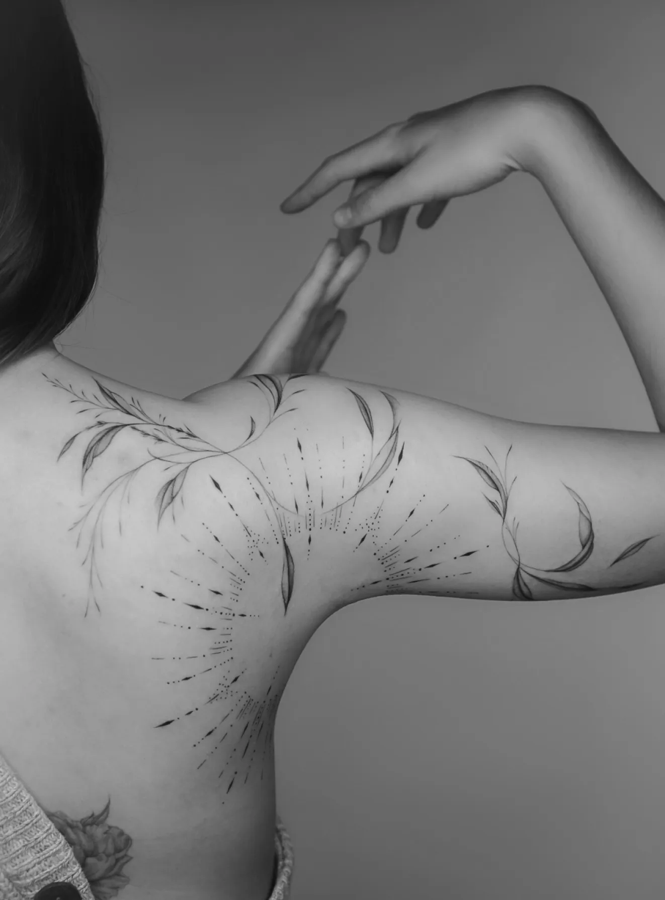
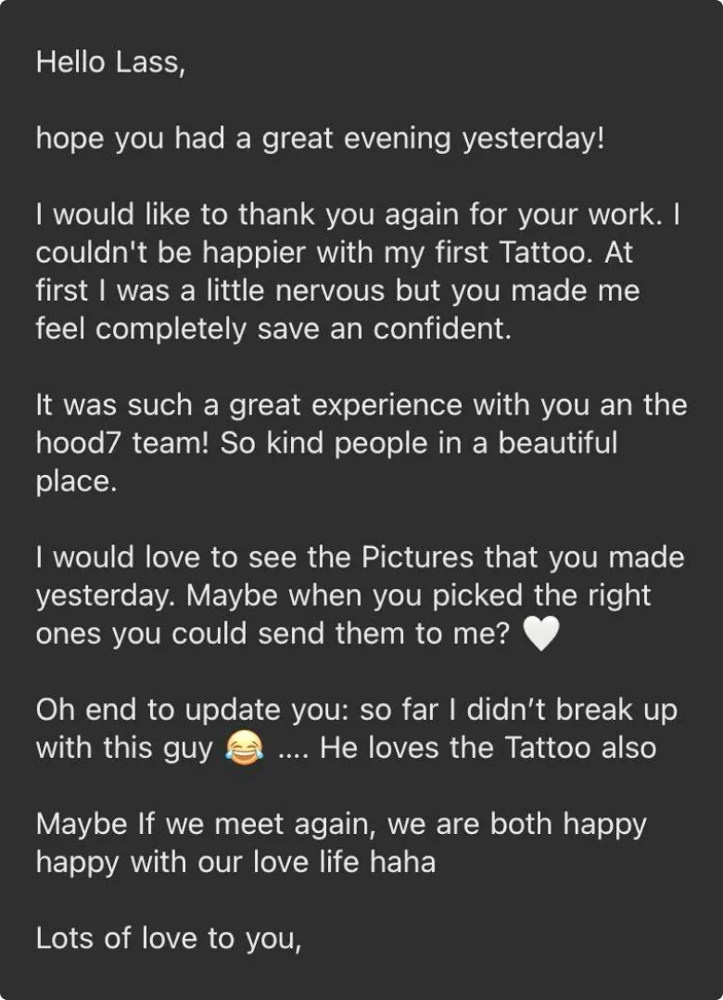
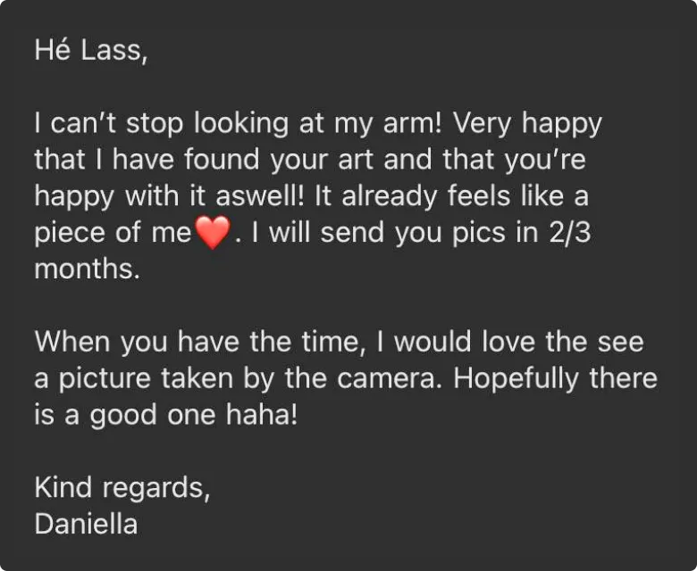
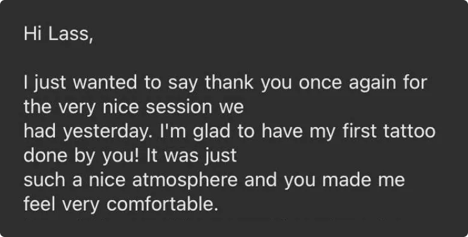
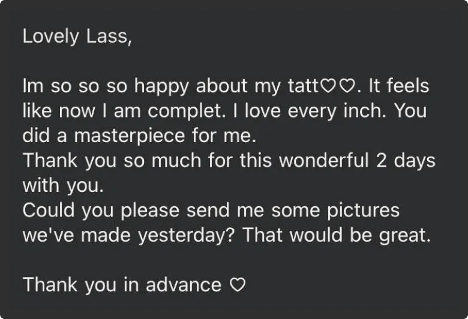
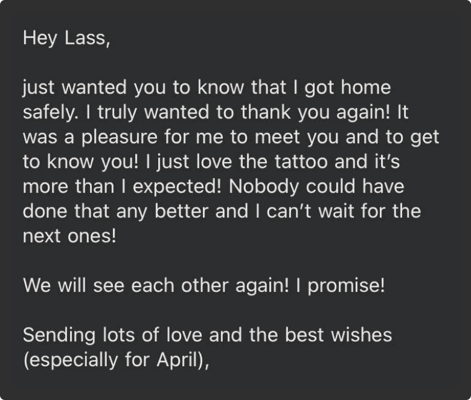
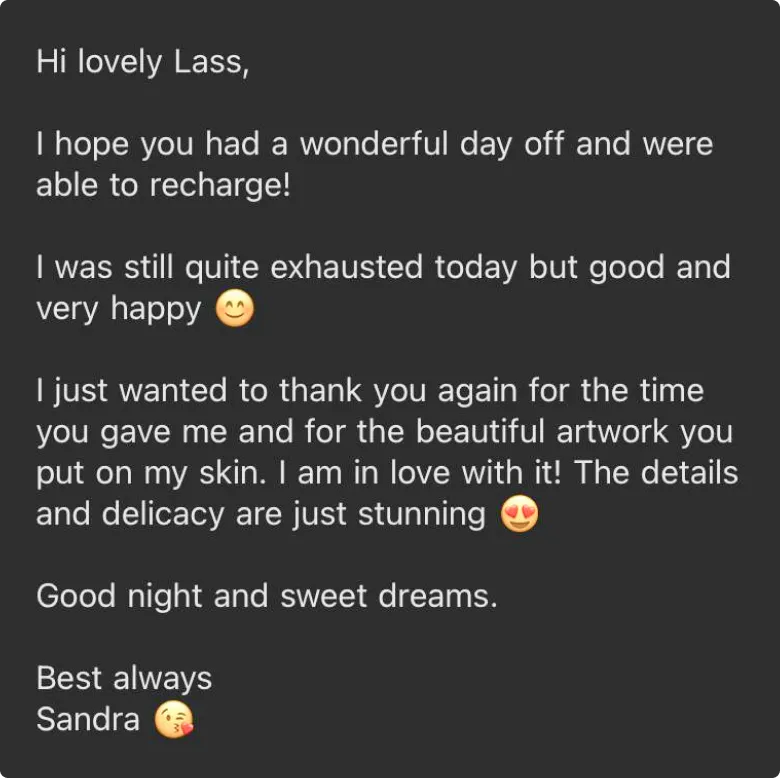
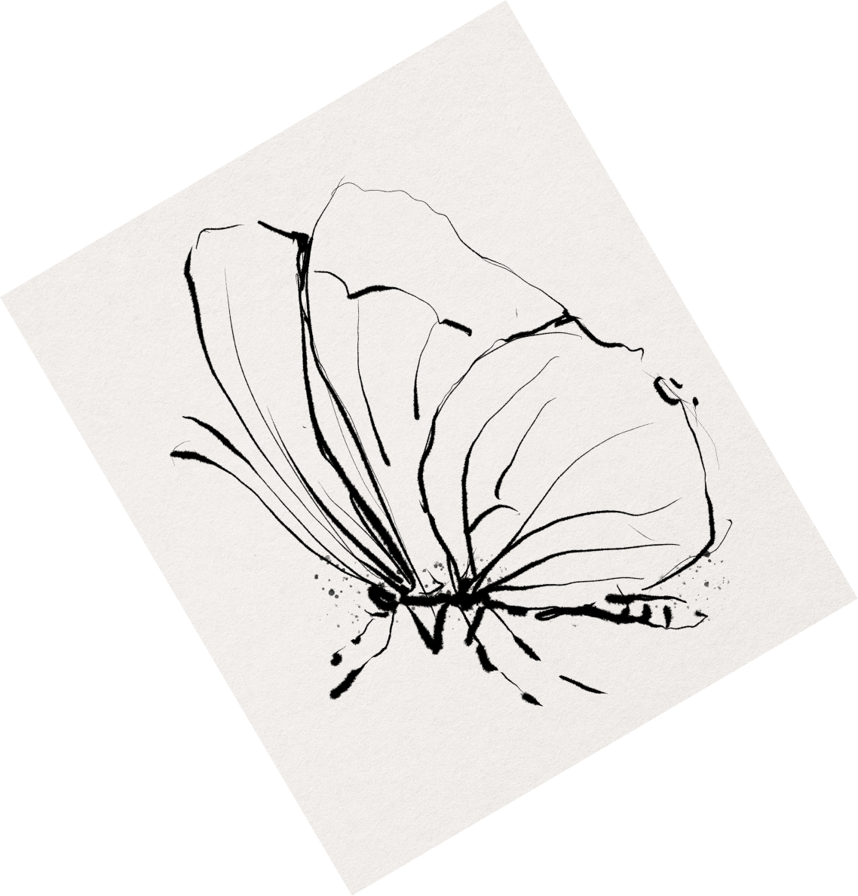

lass
tattoo
Tattoo artist
based in Hamburg

lass
tattoo
Tattoo artist
based in Hamburg


I like to work with people and create something from zero what is going to stay forever on the human body. I do freehand and freestyle tattoos - it's about freedom and feeling.
Everyone has their own special energy's which i read in our first 15 min when we meet: how you smile, how you speak, how you feel yourself. There comes an image in my head where i already can see the future design for your project.
sensitively
sensi-
tively



The process for me is always like we dance feeling each other and that time comes something unique for you and for me.



Trust to the artist starts with trust in the world. My aim is to inspire faith in yourself, the future, and life itself through tattoos.
I want to deliver a message through my art that you are free and free always and everywhere. The choice is always yours.
your
precious
your
preci-
ous








let’s vibe
together
let’s
vibe
toge-
ther

I work in a beautiful and comfortable studio in Hamburg and i also do guest spots in other cities


Allskins Studios
Please follow updates on my Instagram to know about my next guest spots


i always see in all of my girls braveness, fearlessness, honestness, refinement, easiness and beauty.
This what i always try to deliver on their skin through their story, characters, life experience and inner state.
one
of the examples is Linda, she got her first tattoo session in her life
with me, which means a lot. she trusted me from the first seconds and
let me to make my art on her arm. we wanted to deliver freedom and
beauty of this world, nature. she would like to travel around the world,
be free and explore the japanese culture.
Tattoo for her means symbol of a freedom.

Most of the time i am creating the first pieces for my clients. I can say that it’s a big trust and i am thankful and honoured to be their artist.
I
remember the story with Anais, so fragile and unique soul at the same
time i can see how her braveness and feminine power wants to show to the
world that she is there and she is strong.
She wanted to have
airy sakura flowers combined with Japanese Umamori design in a very
elegant way and from my side i made the combination of the delicate and
strong design with a contrast. The result - we both were very happy.
Thank you Anais for sharing with me your first experience.


I love when my sessions becomes something more than just a session with you, i love it when we bond and exchange energies with each other.
Katharina
- she is a smart, open, happy, joyful and pure soul. We had two days
session with her and time flew like a shot. I even didn’t want to let
her go, even my colleagues, i think everyone just fell in love with her.
We talked about everything and she is so easy person to work with. i
felt something in her, something similar to me.
I created her design listening to her life story and we both were in love with her design.


I am always in love with this powerful women who is over 40 and deciding to decorate their body because they want to and “now” it’s a time.
Sara will be always in my heart.
She
is a sunshine. She is a wife, mother of 2 kids, kindest soul in this
world. I got inspired to make a canna lilies and sun ornament for her.
Through
the flowers we delivered the elegance, airiness and beauty, through the
sun- ornament we got a jewellery piece, we added her shine, her strong
inner state for this life cause she is strong and bright like a
sunshine. She always smiles, next to her i felt like at home.
leave your email and I will contact you when I plan a trip to Amsterdam